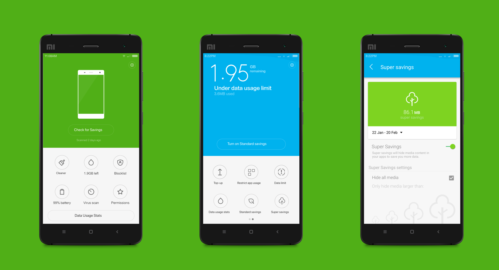
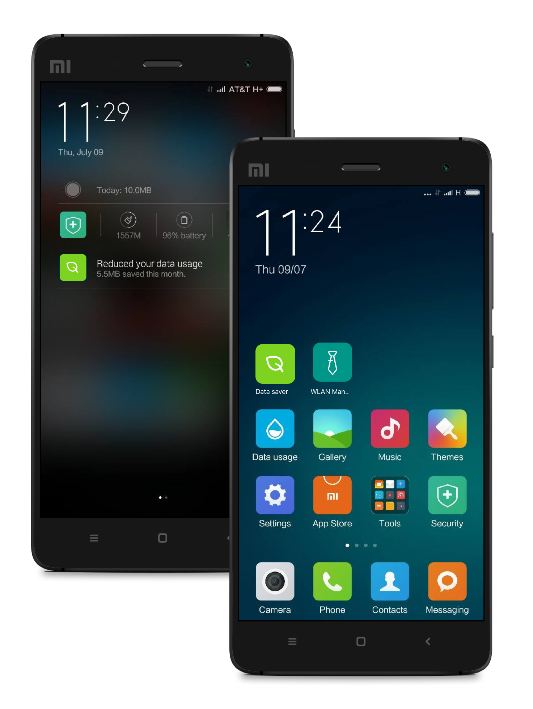
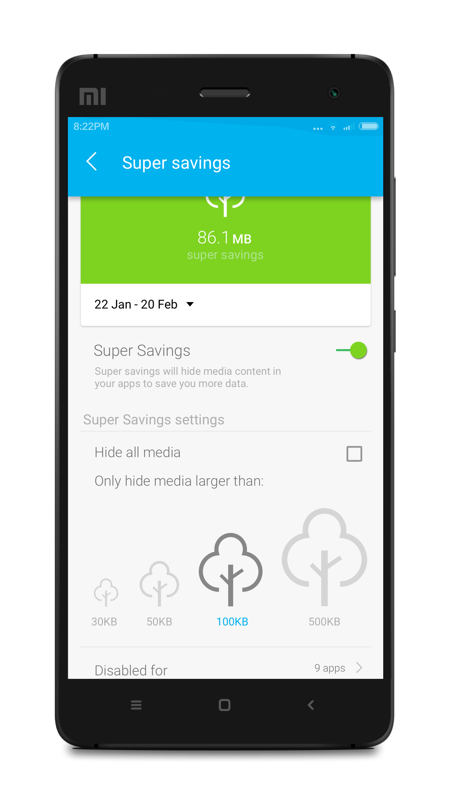
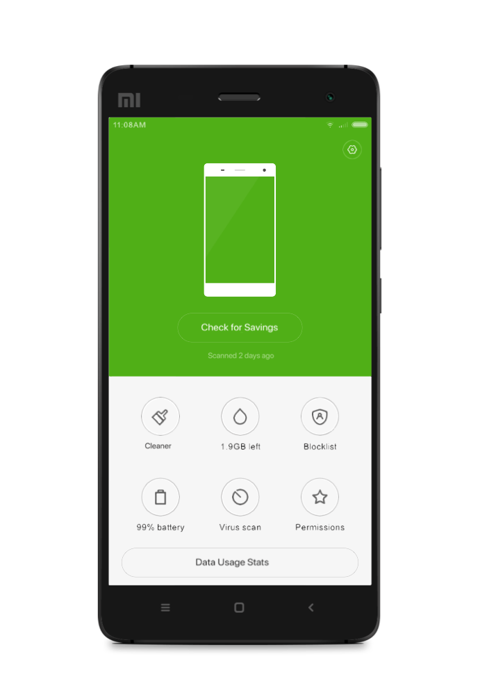

Xiaomi × Opera Max
Opera Software (2015)

During my time at Opera Software, working on the data-savings app Opera Max, I was tasked with designing for OEM partner Xiaomi. The agreement was to integrate the Opera Max technology seamlessly into their device settings.
The Goal
The brief was to weave Opera Max into the Xiaomi ecosystem in a way that never felt malicious or like unnecessary bloatware. That meant the integration needed to be visible and useful - customizable through the home screen, lock screen, and shortcuts bar clearly surfacing the relevant information: the user's data usage.


Granular App Controls
Diving deeper into usage data, users could see exactly what installed apps were doing, and when. New settings gave people far more control over how those apps were allowed to behave in the background.
Visualizing 'Crunching' Data
Rather than loading in a dry utility screen, I added some simple, playful visuals in line with Xiaomi's design language that users could actually interact with in order to see how much data they had saved at a given time.


Image-on-Demand
One of the more clever settings let users choose whether graphics across web pages and browsers loaded automatically, based on file size and current data usage. This stretched a user's data plan further by letting images load on demand, and quietly worked around the fact that these devices weren't allowed to ship with a built-in ad-blocker.